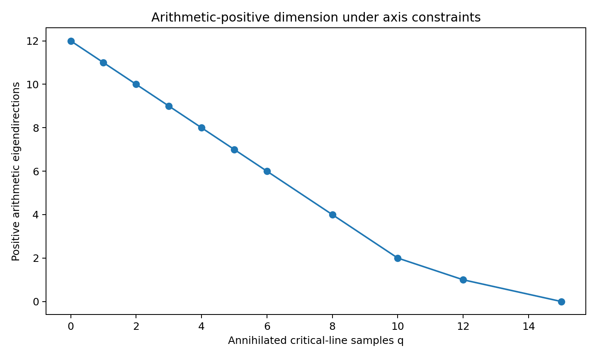
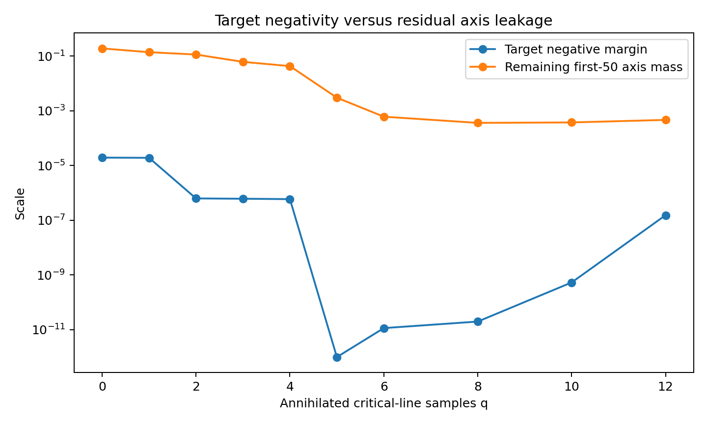

← 半自主研究 / 工程紀錄 / 軸抑制與全窗洩漏感知最佳化器
工程紀錄
v0.1
2026-07-24
CONTROL_WINDOW_NONPOSITIVITY_FAILED
軸抑制與全窗洩漏感知最佳化器
Axis-Suppressed Global-Window Optimizer v0.1 — 加入有限臨界線消去條件後,算術正方向維度從 12 快速塌縮到 0;目標矩形負性保住了,但全控制窗非正化沒有找到可行解。
RH_CLAIM = False
— 包內
selected_candidate_summary.json 自報 status="target-negative and arithmetic-positive, but finite control-window nonpositivity failed",原樣照登。有限維浮點診斷原型,不是區間證書,不是 RH 證明。
連接 · Connections
本包摘要一開始就講明它是在回應上一包留下的問題,原樣照引。
「前一輪已經量化:現有局部負證書的負裕量,遠小於臨界線零點產生的正質量。本輪因此不再只最大化單一目標矩形的負性,而建立同時具有有限臨界線取樣消去、算術二次值下界、目標矩形負性、有限偏軸控制窗交換限制的聯合最佳化原型。」— 摘自本包技術說明摘要。
技術說明
載入中…
結果數據
載入中…
信任邊界
載入中…
圖表 · Figures
包內 outputs/ 五張圖選三張,原樣照登,無後製。



檔案 · Files
完整控制窗/目標矩形密網格數據(selected_control_grid.csv 593 KB、selected_target_grid.csv 731 KB)沒有逐一列出,都在完整 zip 裡。
載入中…
sha256 496474dedba4d922f33ddf9614e9653f04487ca5ad3c93d186f60818908c4881